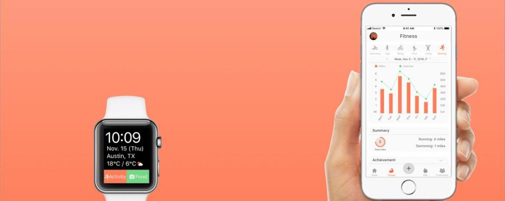

FiDi
A fitness and diet application
Project Overview
My Role: Researcher, DesignerMethods:Interviewing, Surveying
Tools: Qualtrics, Unmoderated Interviews, User Interviews
Platform: Mobile
Team Members: Wendi Xu, Yiping Zhou, Bhavya Sharma, Taka Ishii
Project Duration: August 2018 - December 2018
Problem Space & Task
As a group, we all found a common interest in fitness and eating well. Additionally, were were initially intersted in wearable devices, and the role they play in the fitness industry. Because we felt there were a lack of apps that made it easy to monitor both, we were interested in creating a fitness & diet app that could be used on a mobile device or smart watch.
Solution
Based on quantitative and qualitative data, we created a mobile application with various requirements to help users track their fitness and dieting habits, such as:
- Compatible with mobile and wearable devices
- Automatically tracks and logs users activity and exercise habits
- Easily log food by scanning a barcode or taking a picture
- Easily and quickly visualize progress
- Fitness and diet suggestions based on user preferences
Research Process
The research for this project was split into multiple phases: an initial exploratory phase, in which we conducted a survey, interviews, and competitive analysis, and a evaluative phase, which consisted of moderated and unmoderated interviews.
Phase I: Discovery
Before designing, we wanted to have a better idea of the problem space of fitness and diet tracking, and the application existing in that space. We did this through competitive analysis, moderated interviews, and surveys.
Competitive Analysis
For competitive analysis, we chose a strong balance of apps dedicated to monitoring fitness and dieting habits. With each, we were interested in not only strengths and weaknesses, but target user, motivators, primary features as well.
- Nike Run
- Strong
- 5x5 Stronglifts
- My Diet Coach
- Weight Watchers
- MyFitnessPal
- Keep
- Diet apps usually have a good way to collect diet data and provide related tips for the users, while fitness apps usually do not integrate diet information within the app.
- These apps utilize achievement features, social connection (friends & community), goal settings, and motivational quotes to motivate the users.
- Not all apps are compatible with a variety of wearable devices, which may cause inconvenience to the user.
Moderated Interviews
Prior to conducting research, we decided we would focus on three areas of interest: diet, fitness, and wearables. Deciding areas of interest allowed us to create questions around these topics, and gave us a solid basis for data analysis following the interviews. We also developed sub-themes for each topic based on our goals for the interviews. We were interested in gathering descriptive details about participants’ fitness and dietary habits, pain points they might have, and any technology or methods they might use to monitor their wellness habits. Additionally, we were not only interested in interviewing individuals who cared about their physical wellness, but also users who did not. We hypothesized interviewing users who do not would provide valuable insight about deterrents for adopting healthy eating and fitness habits.
In all, we conducted 11 one-on-one interview sessions, with each session lasting approximately one hour. All interviews were logged into Mural and Microsoft Excel for analysis. From the interviews, we saw:
- Many users do not have a specific goal related to healthy eating/exercise
- Motivation is an obstacle when attempting to maintain a healthy lifestyle
- Automation and personalization are important in fitness apps
- Community engagement is an important part of fitness for some users
- Tracking eating habits is difficult and time consuming
- Wearable devices were seen as a "gimmick", rather than a necessity
- Cost and necessity were primary obstacles to owning a wearable device
Surveying
We created a survey to get a quantitative perspective on the interview gathered in our user interviews. The survey questions were created in a manner similar to our interview questions. We began with the same higher level themes, and created question related to each themes. For multiple choice questions, we referenced data gathered from the user interview to inform multiple choice options, and made sure to include short text options for users to enter qualitative data. Survey respondents were primarily recruited through the University of Texas at Austin, School of Information listserv. Total we had 52 responses to our survey questions. From the surveys, we found:
- Over 95% of respondents care about their eating habits a moderate to high amount
- About 85 of respondents care about their eating habits a moderate to high amount
- 90% of the applicants have tried monitoring eating habits daily at some point
- Less than 60% mentioned being satisfied with apps used to monitor dieting habits
- About 50% of users mentioned they previously owned a wearable device
Prototyping
Following the first phase of research, we were able to confidently outline scenarios for our app, and design low fidelity prototypes around these scenarios to address pain points uncovered in the previous phase. Screens were created in Sketch, and laced together using invision. Once we had a working prototype, we moved to the next phase of research.
Phase II: Evaluation
This phase involved an iterative design process, where we conducted three rounds of usability testing, and modified the prototype between each round.
Round 1: Moderated Usability Testing
To test our low-fidelity prototype, we chose to do moderated interviews to further explore any usability issues in the prototype, and to reserve unmoderated testing for a more polished prototype. In this phase, users were given a list of tasks to complete as they talked aloud. In all, 9 users participated in one-on-one, hour long sessions. From these sessions, we were able to go through the data as a team, and identify areas in each of workflow to address such as:
- Option to take a picture is not visible [ADD PIC]
- Progress indicators were unclear
- Users expect recommendation and suggestion information under the community tab
- The icons used for different food categories are unclear
Round 2: Unmoderated Usability Testing
Before this stage, we implemented changes based on feedback from round 1, and updated the overall detail of our application to improve realism. For this round, we edited the tasks based on feedback from the previous round, and set up usertesting.com. In this round, we tested 7 participants and found:
- Users felt the flow of the onboarding was difficult to understand
- Many hotspots in the prototype are creating unexpected responses from the prototype
- Users looked to either the add button in the task bar or the food/diet page
- Users looked for suggestions under the diet/fitness tabs and on the community page
Round 3: Unmoderated Usability Testing
In round 3, the final phase, we implemented changes based on feedback from round 2 and further improved the detail of our prototype. Total we had 52 responses to our survey questions. For this round, we edited the tasks based on feedback from the previous round, and set up usertesting.com. In this round, we tested 7 participants and found:
- Users felt the flow of the onboarding was difficult to understand
- Many hotspots in the prototype are creating unexpected responses from the prototype
- Users looked to either the add button in the task bar or the food/diet page
- Users looked for suggestions under the diet/fitness tabs and on the community page